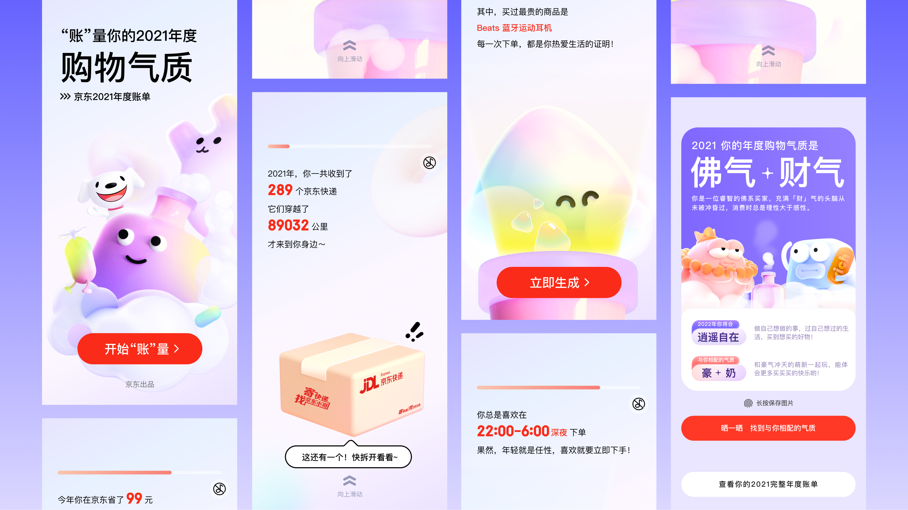
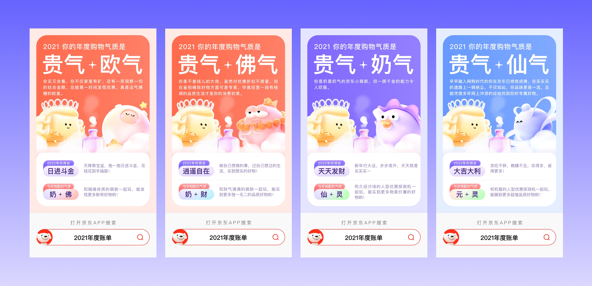

NO.1
项目概览
我的角色：主视觉设计师，本次项目为用户回顾消费数据，加强京东与用户的情感连接，增强了用户黏性，传递了平台价值，收到了比较不错的反馈。

我的角色：主视觉设计师，本次项目为用户回顾消费数据，加强京东与用户的情感连接，增强了用户黏性，传递了平台价值，收到了比较不错的反馈。
核心问题：年度账单项目最核心的难点不是页面数量，而是视觉方向迟迟无法确定。账单产品既需要有记忆点和情绪价值，又不能脱离京东的购物场景；同时还要控制制作成本，保证最终可以按期上线。
设计目标：在有限时间内重新建立可落地的视觉主线，避免账单体验变成普通数据页；同时控制页面体量和视觉复杂度，保证项目能够顺利推进并按期上线。

结构与创意参与：参与前期内容结构梳理和交互创意讨论，协助明确年度账单的浏览流程、内容节奏和整体体验方向。
主视觉确立：参与多轮视觉探索，最终确定以“购物气质”为核心的主视觉方向，推动项目进入可落地阶段。
核心设计：负责年度账单主要流程页设计，包括内容页、转场节奏和关键视觉模块；结果分享页由其他设计师协作完成。
营销素材：基于主视觉方向，完成弹窗、Banner 等营销素材设计，保证站内触达视觉一致。
动效与落地协作：与研发协作制定页面动画规则，并参与设计走查、问题跟进和上线复盘，保障最终体验还原。

2021 年度账单最终顺利上线，累计访问 UV 达 822 万+，较 2020 年大幅提升，也超过 2019 年同期水平。
项目在前期方向反复的情况下完成主视觉收敛、核心页面设计和动效落地，最终保障年度账单体验稳定交付。
